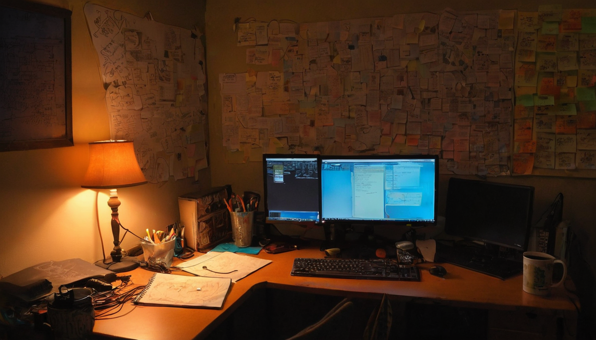
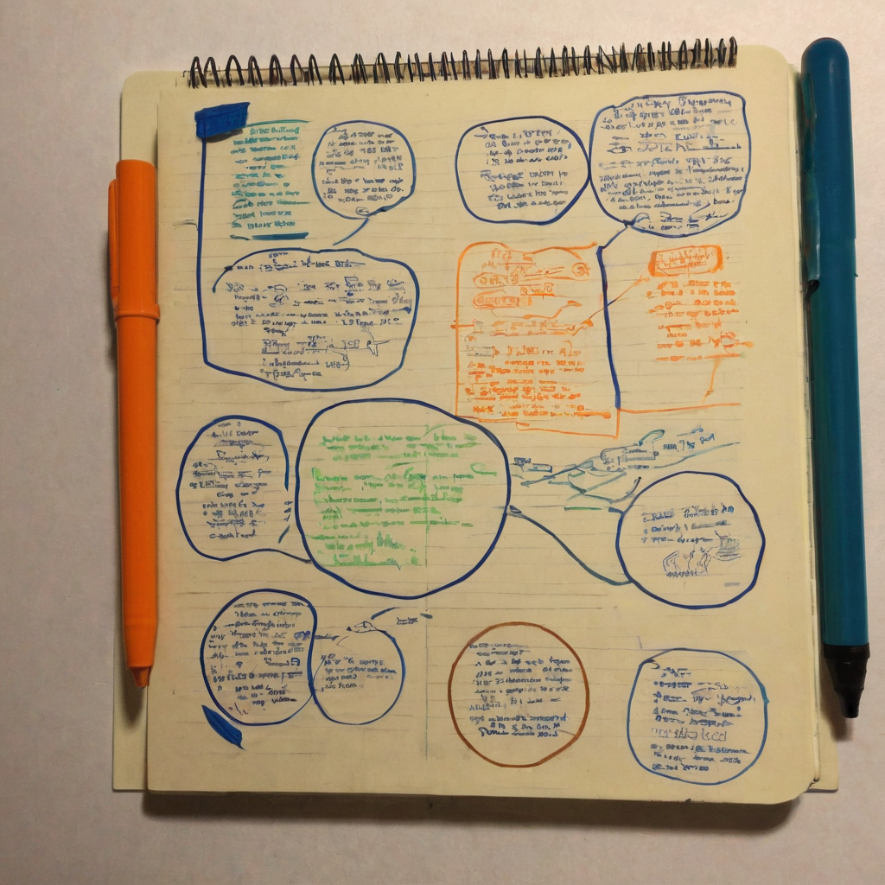

I bookmark a lot of technical threads. This one is not that. It is a joke, and I saved it anyway, because sometimes the small, funny stuff tells you more about a community than another roadmap post would.
@bytesandblocks posted a short, funny observation: the Chia Discord's announcements channel has been quiet for a long time, but lately the poop emoji reaction count under those announcements has been climbing to what they jokingly called an all time high. They tagged it "bullish" on XCH, clearly not as a price call, just as a bit about the vibe in the server. No external links, no data attached, just a screenshot and a laugh.

Here is the thing about long-running crypto projects: the loudest signal is not always the useful one. Price charts get all the attention, but the actual pulse of a project often lives in the boring channels nobody screenshots. An announcements channel getting more reactions, even joking ones, means people are still opening the app, still reading, still bothering to click a reaction emoji instead of scrolling past. That is a small thing. It is also a real thing.
Community humor like this is also just how healthy communities talk to each other. Inside jokes and reaction spam are a form of bonding, not noise. A dead channel getting a pulse of any kind, even a silly one, is worth noticing before you write off a project's community as asleep.
What it does: Points out an informal, very human signal of activity in a specific corner of the Chia community.
Who it helps: Anyone trying to get a feel for whether a project's community is actually present, versus just existing on paper.
What problem it solves: It is a reminder that engagement does not have to be measured in a dashboard to be real. Sometimes it is just people showing up and being goofy together.
What still needs work: This is one person's screenshot and one moment in time. There is no real data here, no chart, no comparison to past activity. It is an anecdote, not a metric, and it should be read as exactly that.
What I would test first: If I were curious, I would actually go look at reaction counts on the last several announcements over a longer window, not just vibes from one post, before drawing any real conclusion about engagement trending up.
I like this one because it is honest about what it is: a joke, not a thesis. I have been around the Chia Discord long enough to know that channel goes quiet for stretches and then wakes back up for no obvious reason, and I think that is just how community spaces breathe. Seeing @bytesandblocks needle the community about it made me smile, and it is the kind of post that only lands if you are actually paying attention to the server, which tells me they are. I would not read this as any kind of real bullish signal on price, and I do not think @bytesandblocks meant it that way either. It is just nice to see people still hanging around and reacting to things, even with poop emojis.
Worth keeping an eye on whether Chia's announcements channel activity keeps climbing for real reasons, new releases, ecosystem updates, actual news, rather than just a meme moment. If the reaction counts stay up once the joke wears off, that would actually say something. For now it is just a fun snapshot of a community still showing up.
Source: X post by @bytesandblocks, https://x.com/i/web/status/2077443472529744085, retrieved on 2026-07-15. No external references included in the source post.